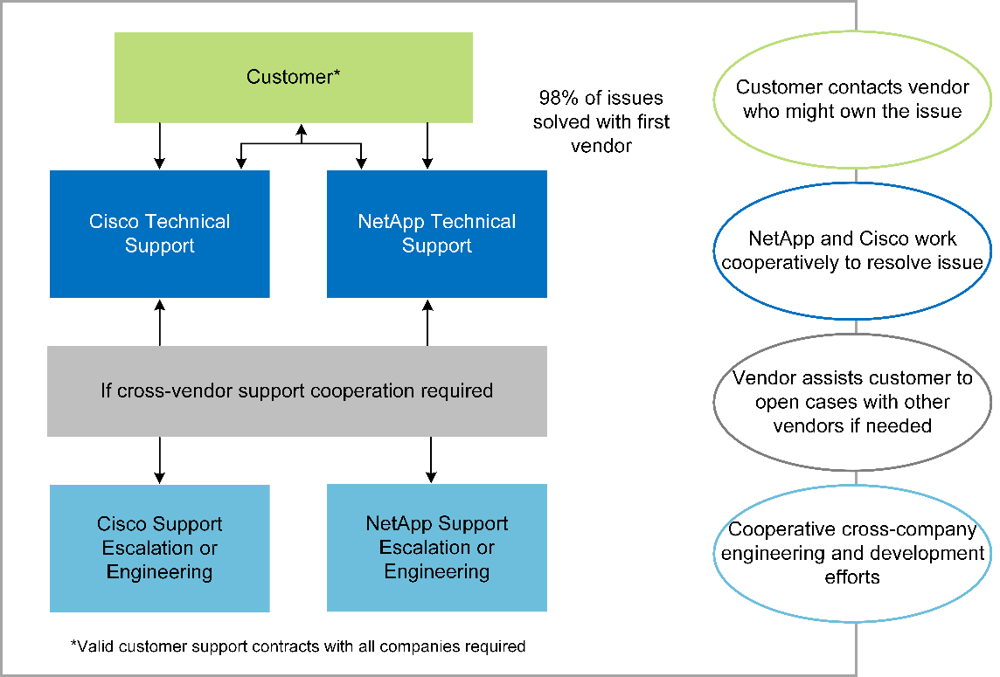
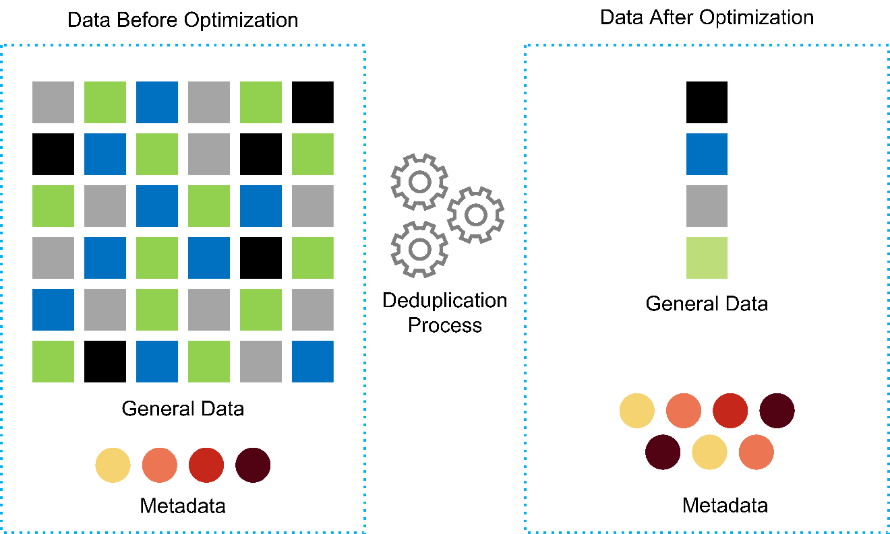
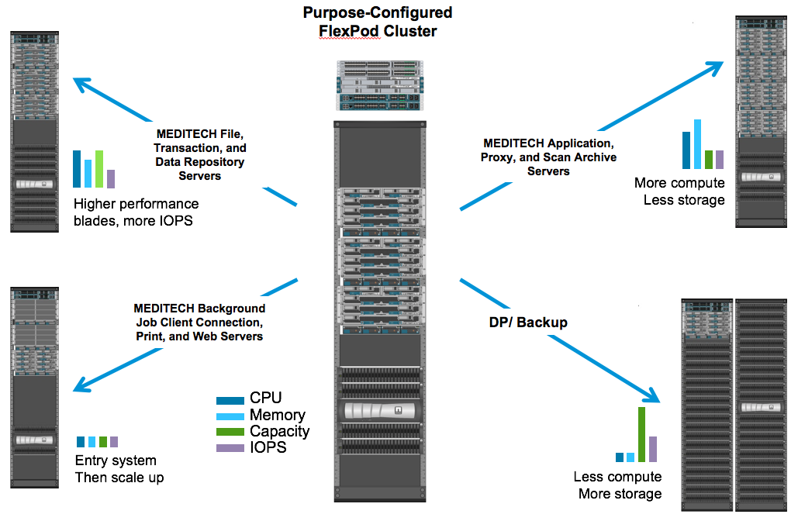

TR-4753: FlexPod Datacenter for MEDITECH Deployment Guide
Contributors
 Download PDF of this page
Download PDF of this page
Brandon Agee and John Duignan, NetApp
Mike Brennan and Jon Ebmeier, Cisco
In partnership with:

Overall solution benefits
By running a MEDITECH environment on the FlexPod architectural foundation, your healthcare organization can expect an improvement in staff productivity and a decrease in capital and operational expenditures. FlexPod Datacenter for MEDITECH delivers several benefits that are specific to the healthcare industry, including:
-
Simplified operations and lowered costs. Eliminate the expense and complexity of legacy platforms by replacing them with a more efficient and scalable shared resource that can support clinicians wherever they are. This solution delivers higher resource utilization for greater return on investment (ROI).
-
Faster deployment of infrastructure. Whether it’s an existing data center or a remote location, with the integrated and tested design of FlexPod Datacenter, you can have your new infrastructure up and running in less time, with less effort.
-
Certified storage. NetApp ONTAP data management software with MEDITECH gives you the superior reliability of a tested and certified storage vendor. MEDITECH does not certify other infrastructure components.
-
Scale-out architecture. Scale SAN and NAS from terabytes (TB) to tens of petabytes (PB) without reconfiguring running applications.
-
Nondisruptive operations. Perform storage maintenance, hardware lifecycle operations, and FlexPod upgrades without interrupting the business.
-
Secure multitenancy. Support the increased needs of virtualized server and storage shared infrastructure, enabling secure multitenancy of facility-specific information, particularly if your system hosts multiple instances of databases and software.
-
Pooled resource optimization. Help reduce physical server and storage controller counts, load- balance workload demands, and boost utilization while improving performance.
-
Quality of service (QoS). FlexPod offers QoS on the entire stack. Industry-leading QoS network, compute, and storage policies enable differentiated service levels in a shared environment. These policies enable optimal performance for workloads and help in isolating and controlling runaway applications.
-
Storage efficiency. Reduce storage costs with the NetApp 7:1 storage efficiency guarantee.
-
Agility. With the industry-leading workflow automation, orchestration, and management tools that FlexPod systems provide, your IT team can be far more responsive to business requests. These business requests can range from MEDITECH backup and provisioning of more test and training environments to analytics database replications for population health management initiatives.
-
Increased productivity. Quickly deploy and scale this solution for optimal clinician end- user experiences.
-
NetApp Data Fabric. The NetApp Data Fabric architecture weaves data together across sites, beyond physical boundaries, and across applications. The NetApp Data Fabric is built for data-driven enterprises in a data-centric world. Data is created and is used in multiple locations, and often you need to leverage and to share it with other locations, applications, and infrastructures. You need a way to manage your data that is consistent and integrated. The Data Fabric provides a way to manage data that puts IT in control and that simplifies ever-increasing IT complexity.
FlexPod
New infrastructure approach for MEDITECH EHRs
Healthcare provider organizations like yours remain under pressure to maximize the benefits from substantial investments in industry-leading MEDITECH electronic health records (EHRs). For mission-critical applications, when customers design their data centers for MEDITECH solutions, they often identify the following goals for their data center architecture:
-
High availability of the MEDITECH applications
-
High performance
-
Ease of implementing MEDITECH in the data center
-
Agility and scalability to enable growth with new MEDITECH releases or applications
-
Cost effectiveness
-
Alignment with MEDITECH guidance and target platforms
-
Manageability, stability, and ease of support
-
Robust data protection, backup, recovery, and business continuance
As MEDITECH users evolve their organizations to become accountable care organizations and adjust to tightened, bundled reimbursement models, the challenge becomes delivering the required MEDITECH infrastructure in a more efficient and agile IT delivery model.
Value of prevalidated converged infrastructure
Because of an overarching requirement to deliver predictable low-latency system performance and high availability, MEDITECH is prescriptive as to its customers’ hardware requirements.
FlexPod is a prevalidated, rigorously tested converged infrastructure from the strategic partnership of Cisco and NetApp. It is engineered and designed specifically to deliver predictable low-latency system performance and high availability. This approach results in MEDITECH compliance and ultimately optimal response time for users of the MEDITECH system.
The FlexPod solution from Cisco and NetApp meets MEDITECH system requirements with a high- performing, modular, prevalidated, converged, virtualized, efficient, scalable, and cost-effective platform. It provides:
-
Modular architecture. FlexPod meets the varied needs of the MEDITECH modular architecture with purpose-configured FlexPod platforms for each specific workload. All components are connected through a clustered server and a storage management fabric and a cohesive management toolset.
-
Industry-leading technology at each level of the converged stack. Cisco, NetApp, VMware, and Microsoft Windows are all ranked as number 1 or number 2 by industry analysts in their respective categories of servers, networking, storage, and operating systems.
-
Investment protection with standardized, flexible IT. The FlexPod reference architecture anticipates new product versions and updates, with rigorous ongoing interoperability testing to accommodate future technologies as they become available.
-
Proven deployment across a broad range of environments. Pretested and jointly validated with popular hypervisors, operating systems, applications, and infrastructure software, FlexPod has been installed in multiple MEDITECH customer organizations.
Proven FlexPod architecture and cooperative support
FlexPod is a proven data center solution, offering a flexible, shared infrastructure that easily scales to support your growing workload demands without negatively affecting performance. By leveraging the FlexPod architecture, this solution delivers the full benefits of FlexPod, including:
-
Performance to meet the MEDITECH workload requirements. Depending on your MEDITECH Hardware Configuration Proposal requirements, different ONTAP platforms can be deployed to meet your required I/O and latency requirements.
-
Scalability to easily accommodate clinical data growth. Dynamically scale virtual machines (VMs), servers, and storage capacity on demand, without traditional limits.
-
Enhanced efficiency. Reduce both administration time and TCO with a converged virtualized infrastructure, which is easier to manage and which stores data more efficiently while driving more performance from MEDITECH software.
-
Reduced risk. Minimize business disruption with a prevalidated platform that is built on a defined architecture that eliminates deployment guesswork and accommodates ongoing workload optimization.
-
FlexPod Cooperative Support. NetApp and Cisco have established Cooperative Support, a strong, scalable, and flexible support model to meet the unique support requirements of the FlexPod converged infrastructure. This model uses the combined experience, resources, and technical support expertise of NetApp and Cisco to provide a streamlined process for identifying and resolving your FlexPod support issue, regardless of where the problem resides. With the FlexPod Cooperative Support model, your FlexPod system operates efficiently and benefits from the most up-to-date technology, and you work with an experienced team to help you resolve integration issues.
FlexPod Cooperative Support is especially valuable to healthcare organizations that run business-critical applications such as MEDITECH on the FlexPod converged infrastructure. The following figure illustrates the FlexPod Cooperative Support model.

In addition to these benefits, each component of the FlexPod Datacenter stack with MEDITECH solution delivers specific benefits for MEDITECH EHR workflows.
Cisco Unified Computing System
A self-integrating, self-aware system, Cisco Unified Computing System (Cisco UCS) consists of a single management domain that is interconnected with a unified I/O infrastructure. So that the infrastructure can deliver critical patient information with maximum availability, Cisco UCS for MEDITECH environments has been aligned with MEDITECH infrastructure recommendations and best practices.
The foundation of MEDITECH on Cisco UCS architecture is Cisco UCS technology, with its integrated systems management, Intel Xeon processors, and server virtualization. These integrated technologies solve data center challenges and help you meet your goals for data center design for MEDITECH. Cisco UCS unifies LAN, SAN, and systems management into one simplified link for rack servers, blade servers, and VMs. Cisco UCS is an end-to-end I/O architecture that incorporates Cisco Unified Fabric and Cisco Fabric Extender Technology (FEX Technology) to connect every component in Cisco UCS with a single network fabric and a single network layer.
The system can be deployed as a single or multiple logical units that incorporate and scale across multiple blade chassis, rack servers, racks, and data centers. The system implements a radically simplified architecture that eliminates the multiple redundant devices that populate traditional blade server chassis and rack servers. In traditional systems, redundant devices such as Ethernet and FC adapters and chassis management modules result in layers of complexity. Cisco UCS consists of a redundant pair of Cisco UCS Fabric Interconnects (FIs) that provide a single point of management, and a single point of control, for all I/O traffic.
Cisco UCS uses service profiles to help ensure that virtual servers in the Cisco UCS infrastructure are configured correctly. Service profiles are composed of network, storage, and compute policies that are created once by subject-matter experts in each discipline. Service profiles include critical server information about the server identity such as LAN and SAN addressing, I/O configurations, firmware versions, boot order, network virtual LAN (VLAN), physical port, and QoS policies. Service profiles can be dynamically created and associated with any physical server in the system in minutes, rather than in hours or days. The association of service profiles with physical servers is performed as a simple, single operation and enables migration of identities between servers in the environment without requiring any physical configuration changes. It facilitates rapid bare-metal provisioning of replacements for retired servers.
The use of service profiles helps ensure that servers are configured consistently throughout the enterprise. When multiple Cisco UCS management domains are employed, Cisco UCS Central can use global service profiles to synchronize configuration and policy information across domains. If maintenance needs to be performed in one domain, the virtual infrastructure can be migrated to another domain. This approach helps to ensure that even when a single domain is offline, applications continue to run with high availability.
To demonstrate that it meets the server configuration requirements, Cisco UCS has been extensively tested with MEDITECH over a multiyear period. Cisco UCS is a supported server platform, as listed on the MEDITECH Product Resources System Support site.
Cisco networking
Cisco Nexus switches and Cisco MDS multilayer directors provide enterprise-class connectivity and SAN consolidation. Cisco multiprotocol storage networking reduces business risk by providing flexibility and options: FC, Fibre Connection (FICON), FC over Ethernet (FCoE), SCSI over IP (iSCSI), and FC over IP (FCIP).
Cisco Nexus switches offer one of the most comprehensive data center network feature sets in a single platform. They deliver high performance and density for both data center and campus cores. They also offer a full feature set for data center aggregation, end-of-row, and data center interconnect deployments in a highly resilient modular platform.
Cisco UCS integrates computing resources with Cisco Nexus switches and a unified I/O fabric that identifies and handles different types of network traffic. This traffic includes storage I/O, streamed desktop traffic, management, and access to clinical and business applications. You get:
-
Infrastructure scalability. Virtualization, efficient power and cooling, cloud scale with automation, high density, and high performance all support efficient data center growth.
-
Operational continuity. The design integrates hardware, NX-OS software features, and management to support zero-downtime environments.
-
Network and computer QoS. Cisco delivers policy-driven class of service (CoS) and QoS across the networking, storage, and compute fabric for optimal performance of mission- critical applications.
-
Transport flexibility. Incrementally adopt new networking technologies with a cost-effective solution.
Together, Cisco UCS with Cisco Nexus switches and Cisco MDS multilayer directors provides an optimal compute, networking, and SAN connectivity solution for MEDITECH.
NetApp ONTAP
NetApp storage that runs ONTAP software reduces your overall storage costs while it delivers the low-latency read and write response times and IOPS that MEDITECH workloads need. ONTAP supports both all-flash and hybrid storage configurations to create an optimal storage platform that meets MEDITECH requirements. NetApp flash-accelerated systems have received MEDITECH’s validation and certification, giving you as a MEDITECH customer the performance and responsiveness that are key to latency-sensitive MEDITECH operations. By creating multiple fault domains in a single cluster, NetApp systems can also isolate production from nonproduction. NetApp systems also reduce performance issues with a guaranteed performance level minimum for workloads with ONTAP QoS.
The scale-out architecture of the ONTAP software can flexibly adapt to various I/O workloads. To deliver the necessary throughput and low latency that clinical applications need while also providing a modular scale-out architecture, all-flash configurations are typically used in ONTAP architectures. NetApp AFF nodes can be combined in the same scale-out cluster with hybrid (HDD and flash) storage nodes that are suitable for storing large datasets with high throughput. Along with a MEDITECH-approved backup solution, you can clone, replicate, and back up your MEDITECH environment from expensive solid-state drive (SSD) storage to more economical HDD storage on other nodes. This approach meets or exceeds MEDITECH guidelines for SAN-based cloning and backup of production pools.
Many of the ONTAP features are especially useful in MEDITECH environments: simplifying management, increasing availability and automation, and reducing the total amount of storage needed. With these features, you get:
-
Outstanding performance. The NetApp AFF solution shares the Unified Storage Architecture, ONTAP software, management interface, rich data services, and advanced feature set that the rest of the NetApp FAS product families have. This innovative combination of all-flash media with ONTAP delivers the consistent low latency and high IOPS of all-flash storage with the industry-leading quality of ONTAP software.
-
Storage efficiency. Reduce total capacity requirements with deduplication, NetApp FlexClone data replication technology, inline compression, inline compaction, thin replication, thin provisioning, and aggregate deduplication.
NetApp deduplication provides block-level deduplication in a NetApp FlexVol volume or data constituent. Essentially, deduplication removes duplicate blocks, storing only unique blocks in the FlexVol volume or data constituent.
Deduplication works with a high degree of granularity and operates on the active file system of the FlexVol volume or data constituent. It is application transparent; therefore, you can use it to deduplicate data that originates from any application that uses the NetApp system. You can run volume deduplication as an inline process (starting in ONTAP 8.3.2). You can also run it as a background process that you can configure to run automatically, to be scheduled, or to run manually through the CLI, NetApp ONTAP System Manager, or NetApp Active IQ Unified Manager.
The following figure illustrates how NetApp deduplication works at the highest level.

-
Space-efficient cloning. The FlexClone capability enables you to almost instantly create clones to support backup and testing environment refresh. These clones consume more storage only as changes are made.
-
NetApp Snapshot and SnapMirror technologies. ONTAP can create space-efficient Snapshot copies of the logical unit numbers (LUNs) that the MEDITECH host uses. For dual-site deployments, you can implement SnapMirror software for more data replication and resiliency.
-
Integrated data protection. Full data protection and disaster recovery features help you protect critical data assets and provide disaster recovery.
-
Nondisruptive operations. You can perform upgrades and maintenance without taking data offline.
-
QoS and adaptive QoS (AQoS). Storage QoS enables you to limit potential bully workloads. More important, QoS can guarantee a performance minimum for critical workloads such as MEDITECH production. By limiting contention, NetApp QoS can reduce performance-related issues. AQoS works with predefined policy groups, which you can apply directly to a volume. These policy groups can automatically scale a throughput ceiling or floor-to-volume size, maintaining the ratio of IOPS to terabytes and gigabytes as the size of the volume changes.
-
NetApp Data Fabric. The NetApp Data Fabric simplifies and integrates data management across cloud and on-premises environments to accelerate digital transformation. It delivers consistent and integrated data management services and applications for data visibility and insights, data access and control, and data protection and security. NetApp is integrated with Amazon Web Services (AWS), Azure, Google Cloud Platform, and IBM Cloud clouds, giving you a wide breadth of choice.
The following figure illustrates the FlexPod architecture for MEDITECH workloads.

MEDITECH overview
Medical Information Technology, Inc., commonly known as MEDITECH, is a Massachusetts-based software company that provides information systems for healthcare organizations. MEDITECH provides an EHR system that is designed to store and to organize the latest patient data and provides the data to clinical staff. Patient data includes, but is not limited to, demographics; medical history; medication; laboratory test results; radiology images; and personal information such as age, height, and weight.
It is beyond the scope of this document to cover the wide span of functions that MEDITECH software supports. Appendix A provides more information about these broad sets of MEDITECH functions. MEDITECH applications require several VMs to support these functions. To deploy these applications, see the recommendations from MEDITECH.
For each deployment, from the storage system point of view, all MEDITECH software systems require a distributed patient-centric database. MEDITECH has its own proprietary database, which uses the Windows operating system.
BridgeHead and Commvault are the two backup software applications that are certified by both NetApp and MEDITECH. The scope of this document does not cover the deployment of these backup applications.
The primary focus of this document is to enable the FlexPod stack (servers and storage) to meet the performance-driven requirements for the MEDITECH database and the backup requirements in the EHR environment.
Purpose-built for specific MEDITECH workloads
MEDITECH does not resell server, network, or storage hardware, hypervisors, or operating systems; however, it has specific requirements for each component of the infrastructure stack. Therefore, Cisco and NetApp worked together to test and to enable FlexPod Datacenter to be successfully configured, deployed, and supported to meet the MEDITECH production environment requirements of customers like you.
MEDITECH categories
MEDITECH associates the deployment size with a category number that ranges from 1 to 6. Category 1 represents the smallest MEDITECH deployments, and category 6 represents the largest MEDITECH deployments.
For information about the I/O characteristics and performance requirements for a MEDITECH host in each category, see NetApp TR-4190: NetApp Sizing Guidelines for MEDITECH Environments.
MEDITECH platform
The MEDITECH Expanse platform is the latest version of the company’s EHR software. Earlier MEDITECH platforms are Client/Server 5.x and MAGIC. This section describes the MEDITECH platform (applicable to Expanse, 6.x, C/S 5.x, and MAGIC), pertaining to the MEDITECH host and its storage requirements.
For all the preceding MEDITECH platforms, multiple servers run MEDITECH software, performing various tasks. The previous figure depicts a typical MEDITECH system, including MEDITECH hosts serving as application database servers and other MEDITECH servers. Examples of other MEDITECH servers include the Data Repository application, the Scanning and Archiving application, and Background Job Clients. For the complete list of other MEDITECH servers, see the “Hardware Configuration Proposal” (for new deployments) and “Hardware Evaluation Task” (for existing deployments) documents. You can obtain these documents from MEDITECH through the MEDITECH system integrator or from your MEDITECH Technical Account Manager (TAM).
MEDITECH host
A MEDITECH host is a database server. This host is also referred to as a MEDITECH file server (for the Expanse, 6.x, or C/S 5.x platform) or as a MAGIC machine (for the MAGIC platform). This document uses the term MEDITECH host to refer to a MEDITECH file server or a MAGIC machine.
MEDITECH hosts can be physical servers or VMs that run on the Microsoft Windows Server operating system. Most commonly in the field, MEDITECH hosts are deployed as Windows VMs that run on a VMware ESXi server. As of this writing, VMware is the only hypervisor that MEDITECH supports. A MEDITECH host stores its program, dictionary, and data files on a Microsoft Windows drive (for example, drive E) on the Windows system.
In a virtual environment, a Windows E drive resides on a LUN that is attached to the VM by way of a raw device mapping (RDM) in physical compatibility mode. The use of Virtual Machine Disk (VMDK) files as a Windows E drive in this scenario is not supported by MEDITECH.
MEDITECH host workload I/O characteristic
The I/O characteristic of each MEDITECH host and the system as a whole depends on the MEDITECH platform that you deploy. All MEDITECH platforms (Expanse, 6.x, C/S 5.x, and MAGIC) generate workloads that are 100% random.
The MEDITECH Expanse platform generates the most demanding workload because it has the highest percentage of write operations and overall IOPS per host, followed by 6.x, C/S 5.x, and the MAGIC platforms.
For more details about the MEDITECH workload descriptions, see TR-4190: NetApp Sizing Guidelines for MEDITECH Environments.
Storage network
MEDITECH requires that the FC Protocol be used for data traffic between the NetApp FAS or AFF system and the MEDITECH hosts of all categories.
Storage presentation for a MEDITECH host
Each MEDITECH host uses two Windows drives:
-
Drive C. This drive stores the Windows Server operating system and the MEDITECH host application files.
-
Drive E. The MEDITECH host stores its program, dictionary, and data files on drive E of the Windows Server operating system. Drive E is a LUN that is mapped from the NetApp FAS or AFF system by using the FC Protocol. MEDITECH requires that the FC Protocol be used so that the MEDITECH host’s IOPS and read and write latency requirements are met.
Volume and LUN naming convention
MEDITECH requires that a specific naming convention be used for all LUNs.
Before any storage deployment, verify the MEDITECH Hardware Configuration Proposal to confirm the naming convention for the LUNs. The MEDITECH backup process relies on the volume and LUN naming convention to properly identify the specific LUNs to back up.
Comprehensive management tools and automation capabilities
Cisco UCS with Cisco UCS Manager
Cisco focuses on three key elements to deliver a superior data center infrastructure: simplification, security, and scalability. The Cisco UCS Manager software combined with platform modularity provides a simplified, secure, and scalable desktop virtualization platform:
-
Simplified. Cisco UCS provides a radical new approach to industry-standard computing and provides the core of the data center infrastructure for all workloads. Cisco UCS offers many features and benefits, including reduction in the number of servers that you need and reduction in the number of cables that are used per server. Another important feature is the capability to rapidly deploy or to reprovision servers through Cisco UCS service profiles. With fewer servers and cables to manage and with streamlined server and application workload provisioning, operations are simplified. Scores of blade and rack servers can be provisioned in minutes with Cisco UCS Manager service profiles. Cisco UCS service profiles eliminate server integration runbooks and eliminate configuration drift. This approach accelerates the time to productivity for end users, improves business agility, and allows IT resources to be allocated to other tasks.
Cisco UCS Manager automates many mundane, error-prone data center operations such as configuration and provisioning of server, network, and storage access infrastructure. In addition, Cisco UCS B-Series Blade Servers and C-Series Rack Servers with large memory footprints enable high application user density, which helps reduce server infrastructure requirements.
Simplification leads to a faster, more successful MEDITECH infrastructure deployment.
-
Secure. Although VMs are inherently more secure than their physical predecessors, they introduce new security challenges. Mission-critical web and application servers that use a common infrastructure such as virtual desktops are now at a higher risk for security threats. Inter- VM traffic now poses an important security consideration that your IT managers must address, especially in dynamic environments in which VMs, using VMware vMotion, move across the server infrastructure.
Virtualization, therefore, significantly increases the need for VM- level awareness of policy and security, especially given the dynamic and fluid nature of VM mobility across an extended computing infrastructure. The ease with which new virtual desktops can proliferate magnifies the importance of a virtualization-aware network and security infrastructure. Cisco data center infrastructure (Cisco UCS, Cisco MDS, and Cisco Nexus family solutions) for desktop virtualization provides strong data center, network, and desktop security, with comprehensive security from the desktop to the hypervisor. Security is enhanced with segmentation of virtual desktops, VM-aware policies and administration, and network security across the LAN and WAN infrastructure.
-
Scalable. Growth of virtualization solutions is all but inevitable, so a solution must be able to scale, and to scale predictably, with that growth. The Cisco virtualization solutions support high VM density (VMs per server), and more servers scale with near-linear performance. Cisco data center infrastructure provides a flexible platform for growth and improves business agility. Cisco UCS Manager service profiles allow on-demand host provisioning and make it as easy to deploy hundreds of hosts as it is to deploy dozens.
Cisco UCS Servers provide near-linear performance and scale. Cisco UCS implements the patented Cisco Extended Memory Technology to offer large memory footprints with fewer sockets (with scalability of up to 1TB of memory with 2- and 4-socket servers). By using Unified Fabric technology as a building block, Cisco UCS Server aggregate bandwidth can scale up to 80Gbps per server, and the northbound Cisco UCS Fabric Interconnect can output 2Tbps at line rate. This capability helps prevent desktop virtualization I/O and memory bottlenecks. Cisco UCS, with its high-performance, low-latency Unified Fabric-based networking architecture, supports high volumes of virtual desktop traffic, including high-resolution video and communications traffic. In addition, ONTAP helps to maintain data availability and optimal performance during boot and login storms as part of the FlexPod virtualization solutions.
Cisco UCS, Cisco MDS, and Cisco Nexus data center infrastructure designs provide an excellent platform for growth. You get transparent scaling of server, network, and storage resources to support desktop virtualization, data center applications, and cloud computing.
VMware vCenter Server
VMware vCenter Server provides a centralized platform for managing MEDITECH environments so that your healthcare organization can automate and deliver a virtual infrastructure with confidence:
-
Simple deployment. Quickly and easily deploy vCenter Server by using a virtual appliance.
-
Centralized control and visibility. Administer the entire VMware vSphere infrastructure from a single location.
-
Proactive optimization. Allocate and optimize resources for maximum efficiency.
-
Management. Use powerful plug-ins and tools to simplify management and to extend control.
Virtual Storage Console for VMware vSphere
Virtual Storage Console (VSC), vSphere API for Storage Awareness (VASA) Provider, and VMware Storage Replication Adapter (SRA) for VMware vSphere from NetApp make up a single virtual appliance. The product suite includes SRA and VASA Provider as plug-ins to vCenter Server, which provides end-to-end lifecycle management for VMs in VMware environments that use NetApp storage systems.
The virtual appliance for VSC, VASA Provider, and SRA integrates smoothly with the VMware vSphere Web Client and enables you to use SSO services. In an environment with multiple VMware vCenter Server instances, each vCenter Server instance that you want to manage must have its own registered instance of VSC. The VSC dashboard page enables you to quickly check the overall status of your datastores and VMs.
By deploying the virtual appliance for VSC, VASA Provider, and SRA, you can perform the following tasks:
-
Use VSC to deploy and manage storage and to configure the ESXi host. You can use VSC to add credentials, to remove credentials, to assign credentials, and to set up permissions for storage controllers in your VMware environment. In addition, you can manage ESXi servers that are connected to NetApp storage systems. With a couple clicks, you can set recommended best practice values for host timeouts, NAS, and multipathing for all the hosts. You can also view storage details and collect diagnostic information.
-
Use VASA Provider to create storage capability profiles and to set alarms. VASA Provider for ONTAP is registered with VSC when you enable the VASA Provider extension. You can create and use storage capability profiles and virtual datastores. You can also set alarms to alert you when the thresholds for volumes and aggregates are almost full. You can monitor the performance of VMDKs and the VMs that are created on virtual datastores.
-
Use SRA for disaster recovery. You can use SRA to configure protected and recovery sites in your environment for disaster recovery during failures.
NetApp OnCommand Insight and ONTAP
NetApp OnCommand Insight integrates infrastructure management into the MEDITECH service delivery chain. This approach gives your healthcare organization better control, automation, and analysis of your storage, network, and compute infrastructure. IT can optimize your current infrastructure for maximum benefit while simplifying the process of determining what and when to buy. It also mitigates the risks that are associated with complex technology migrations. Because it requires no agents, installation is straightforward and nondisruptive. Installed storage and SAN devices are continually discovered, and detailed information is collected for full visibility of your entire storage environment. You can quickly identify misused, misaligned, underused, or orphaned assets and reclaim them to fuel future expansion. OnCommand Insight helps you:
-
Optimize existing resources. Identify misused, underused, or orphaned assets by using established best practices to avoid problems and to meet service levels.
-
Make better decisions. Real-time data helps resolve capacity problems more quickly to accurately plan future purchases, to avoid overspending, and to defer capital expenditures.
-
Accelerate IT initiatives. Better understand your virtual environments to help you manage risks, minimize downtime, and speed cloud deployment.
 Edit on GitHub
Edit on GitHub